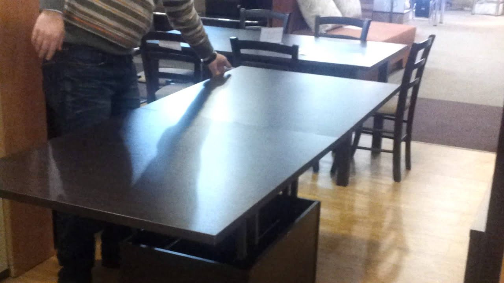

Descoperă mobilă pentru living și camera de zi | JYSK.ro
2020.09.19 21:54
Contactaţi-ne aici Broșură Magazine
Coş
Coşul este golCoş
Coşul este gol Dormitor Cadre de pat Canapele Extensibile Cearșafuri Comodă cu sertare Cuverturi Dulapuri Fețe de pernă Lenjerii de pat Noptiere Oglinzi Pat etaj/cu sertare Paturi continentale Paturi Pliante Perne Picioare și acces Plăpumi Saltele Saltele gonflabile Saltele superioare Somiere Tăblii Baie Accesorii baie Covorașe de baie Haine/încălțăminte Halate de baie Pentru haine Perdele de duș Prosoape Birou Birouri/Birouri Calc Diverse birou Scaune de birou Scaune gaming Sufragerie Canapele Canapele Extensibile Comode TV Fotolii Fotoliu tip puf Măsuțe de cafea/colț Îngrijire mobil/Acc Bucătărie Bufete/Dulapuri Bănci Mese dining Mese/scaune bar Măsuțe hol Scaune Dining Scaune plia/taburete Seturi dining Depozitare Bibliotecă/Etajeră Comodă cu sertare Coșuri, etc. Diverse Dulapuri Mobilier pentru hol Pantofar Rafturi Suporturi de umerașe Umerașe Perdele Acc Cusut Accesorii/unelte Galerii perdele Jaluzele plisate Perdele gata făcute Rolete Grădină Depozitare grădină Mese Mobilier terasă Perne de grădină Saci de Dormit Saltele gonflabile Seturi terasă Trambuline Umbrele de soare,etc Pentru casă Covoare Fețe de masă Iluminat Lavete Mobilier copii Obiecte decorative Oglinzi Pentru casă Pentru haine Perne Perne șezut Piele Preș Produse pentru copii Pături Acasă Sufragerie Canapele Canapele Extensibile Comode TV Fotolii Fotoliu tip puf Îngrijire mobil/Acc Măsuțe de cafea/colțDESCOPERĂ O GAMĂ VARIATĂ DE MOBILĂ PENTRU LIVING ȘI CAMERA DE ZI
Îți oferim o gamă variată de mobilier pentru living și camera de zi - canapele, canapele extensibile, măsuțe de cafea, fotolii, tabureți, pufuri şi comode TV - în diverse stiluri și materiale care păstrează amprenta rădăcinilor noastre scandinave. Fie că preferi un stil clasic, rustic sau unul modern, în sortimentul nostru vei găsi cu siguranță ceva în stilul care ți se potrivește. Mobilierul contemporan pentru living poate optimiza spațiul din casa ta, face o cameră mică să pară mai mare și aduce armonie în casa ta. Alege o canapea, o canapea extensibilă sau un fotoliu din material textil gri și o gamă întreagă de măsuțe de cafea sau mese de colț din lemn, din metal, cu efect de marmură sau aspect din beton.
Canapele
Canapele Extensibile
Comode TV
Fotolii
Fotoliu tip puf
Îngrijire mobil/Acc
Măsuțe de cafea/colț
Mobilier scandinav pentru living și camera de zi
Este important să ai o casă confortabilă, primitoare, în care să te simți întotdeauna relaxat și liniștit. Locuința fiecăruia dintre noi este locul unde ne putem exprima personalitatea. Probabil cea mai importantă piesă a camerei de zi - locul unde întreaga familie se adună seara - este canapeaua. Dacă ești în căutarea unei canapele noi, la JYSK, avem o selecție mare de seturi de canapele, canapele extensibile, canapele cu șezlong și canapele de colț în diferite materiale și culori, și nu facem compromisuri cand vine vorba de design și confort. Vei găsi, de asemenea, canapele mici și mari, în dimensiuni diferite, astfel încât să poți găsi cu ușurință una potrivită pentru camera de zi. Citește mai multe sfaturi pentru a alege o canapea potrivită .
Completează decorul cu un fotoliu confortabil , cu o măsuță de colț pe care să pui câteva decorațiuni și cu un taburet sau puf confortabil. Posibilitățile sunt nelimitate.
De asemenea, nu uita să cumperi accesorii pentru îngrijirea mobilierului . Dacă dorești să îți protejezi podeaua de zgârieturi, este posibil să montezi protecție din fetru sub picioarele pieselor de mobilier.
Inspiră-te din 5 modele de camere de zi sau mini-redecorarea camerei de zi cu un buget mic .
Ghiduri și articole blogINSTA EMOTIONS: Un decor amuzant și informal pentru living
Permite-i stilului tău de viață digital să se reflecte în decorul casei cu culori strălucitoare și detalii decorative distractive.
MY SPACE: Un decor dominat de armonie
Organizează-ți mai bine lucrurile și restabilește-ți nivelul de energie. Un living modern, cu soluții de depozitare și decor elegant.
Canapele extensibile pentru dormit, relaxare și depozitare
O canapea extensibilă cu depozitare încorporată este o soluție ideală pentru economisirea spațiului și te va ajuta să scapi de dezordinea din casa ta.
CULOAREA ANULUI 2020: CLASSIC BLUE ȘI CUM SĂ OBȚII ELEGANȚĂ PRIN SIMPLITATE
O culoare a cărei eleganță derivă din simplitate. Aceasta este Classic Blue, culoarea desemnată de Institutul pentru culori Pantone drept culoarea
MEET POSSIBILITIES. Cauți un job în retail? RĂDĂCINI SCANDINAVE Compania noastră s-a înființat în 1979 în Danemarca. GARANȚII SALTELE Ai 25 de ani garanție la saltelele GOLD și 15 ani garanție la gama PLUS. PREȚ AVANTAJOS Am selecționat o varietate largă de produse care au aceleași prețuri mici în fiecare zi.
Abonează-te la newsletterul JYSK!
Abonează-te la newsletterul JYSK și vei fi primul care află de ofertele noastre! Vei primi articole inspiraționale și informații exclusive despre concursurile noastre.
Categorii
Dormitor Baie Birou Sufragerie Bucătărie Depozitare Perdele Grădină Pentru casă Toate categoriileServiciul clienți
Contact Magazinele Broșură Termeni si conditii vânzări online Solutii finantare Garantia prețului Garanția Produselor Politica de confidentialitate Schimbă consimțământul privind cookie-urile Link-uri utileJYSK
Despre JYSK JYSK.com Presă Locuri de muncă Newsletter Blog GOJYSK.com Responsabilitate socialăSediu Central
JYSK România SRL
Bd. Mihail Kogălniceanu, Nr. 53, Clădirea Splay, Et. 5, 050104, Sector 5, București
serviciuclienti@jysk.com
Telefon: +40723 115 975
RO C.U.I. 18107744, Capital social subscris: 13.266.800 RON, integral vărsat, Nr. de înregistrare la Registrul Comerţului: J40/15662/20.12.2013/ Fiscal identification no. 18107744, Trade Registry no. J40/15662/20.12.2013
Facebook Instagram LinkedIn Pinterest Youtube
